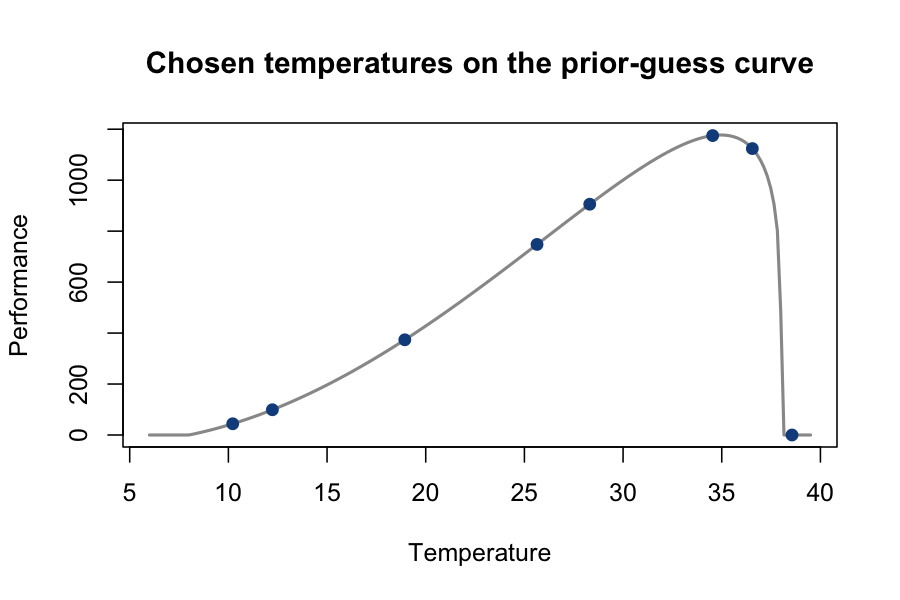

Overview
Fitting a thermal performance curve (TPC) requires choosing which temperatures to measure performance at. Temperatures placed in uninformative parts of the curve can leave the critical thermal minimum and maximum poorly estimated, even with many replicates.
TPCdesign chooses experimental temperatures that are expected to be most informative for fitting a Brière-2 TPC, given rough prior guesses at the curve’s parameters and how uncertain you are about them. The optimization uses approximate coordinate exchange from the acebayes package.
Main functions:
-
design_temps(): choose informative temperatures. -
briere2_tpc()andbriere2_tpc_Topt(): evaluate a Brière-2 curve and its thermal optimum. -
sim_gamma_data(): simulate performance data at a set of temperatures.
Installation
TPCdesign contains C++ code, so installing from source requires a compiler (Rtools on Windows, Xcode Command Line Tools on macOS).
# install.packages("remotes")
remotes::install_github("lucasnell/TPCdesign")To also build the vignette:
remotes::install_github("lucasnell/TPCdesign", build_vignettes = TRUE)Usage
Give design_temps() your best guesses at ctmin, ctmax, a, and b, plus how uncertain you are about ctmin, ctmax, and log(b):
library(TPCdesign)
set.seed(1)
temps <- design_temps(
n_temps = 8,
ctmin = 8, ctmax = 38, a = 1, b = 0.2,
ctmin_err = 2, ctmax_err = 1.5, logb_err = 0.26
)
temps
#> [1] 10.22 12.23 18.94 25.64 28.31 34.54 36.55 38.56
Simulate data at those temperatures before running the experiment:
dat <- sim_gamma_data(temps, n_reps = 6L, obs_cv = 0.15,
ctmin = 8, ctmax = 38, a = 1, b = 0.2)
head(dat)
#> temp y
#> 1 10.22 43.34347
#> 2 10.22 38.28088
#> 3 10.22 41.01239
#> 4 10.22 41.54545
#> 5 10.22 46.95934
#> 6 10.22 48.94567Parallel processing
design_temps() runs its independent optimization starts (n_starts) in parallel if you set a non-sequential future plan:
library(future)
plan(multisession, workers = 4L)
temps <- design_temps(n_temps = 8, ctmin = 8, ctmax = 38, a = 1, b = 0.2)
plan(sequential)Learn more
Full documentation is at https://lucasnell.github.io/TPCdesign/.
The vignette walks through the full workflow, including fitting simulated data from an optimized and an evenly spaced design and comparing parameter recovery:
vignette("TPCdesign", package = "TPCdesign")